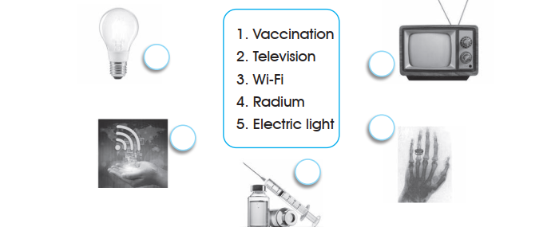
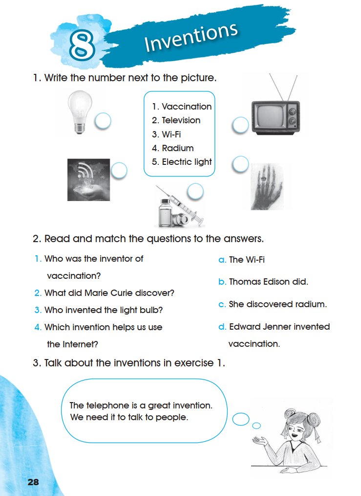
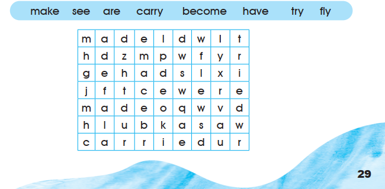
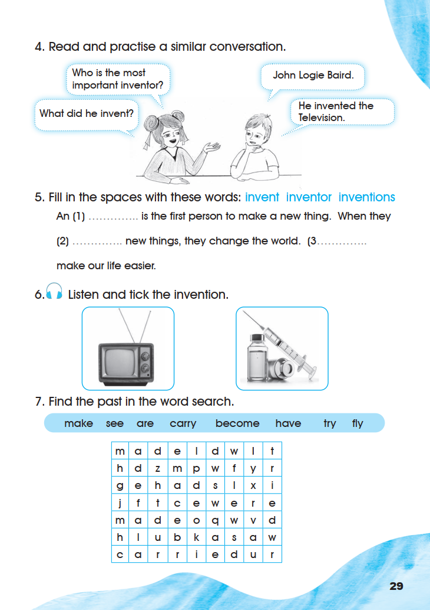
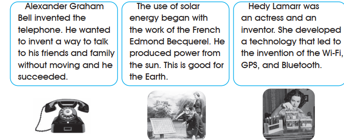
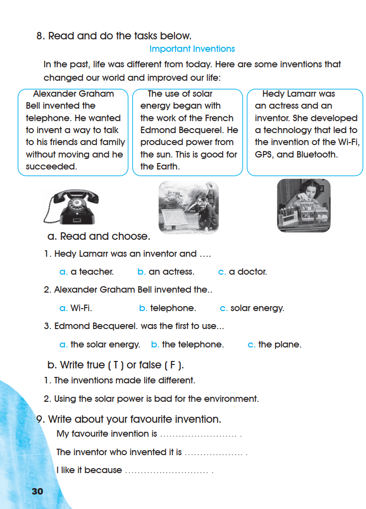

Workbook — Inventions
Exercises 1–9 appear in their original order across pages 28–30. Listening notes are kept separate from the book’s wording.
1. Write the number next to the picture.

Panel text, transcribed from the printed box so it can be read without the picture: 1 Vaccination · 2 Television · 3 Wi-Fi · 4 Radium · 5 Electric light.
- Picture · light bulb
- Picture · television set
- Picture · hand with a Wi-Fi icon
- Picture · syringe and vial
- Picture · radiograph of a hand
The circles are printed empty. Nothing in the picture or in the panel states what each picture shows; the numbers below are worked out by putting the five printed options against the five printed pictures.
0 of 5 answered.
2. Read and match the questions to the answers.
Questions
- Who was the inventor of vaccination?
- What did Marie Curie discover?
- Who invented the light bulb?
- Which invention helps us use the Internet?
Answers
- a The Wi-Fi
- b Thomas Edison did.
- c She discovered radium.
- d Edward Jenner invented vaccination.
0 of 4 answered.
3. Talk about the inventions in exercise 1.
The telephone is a great invention. We need it to talk to people.
This is a speaking task built on the printed example bubble. The page prints no key.
1 Write the number next to the picture: light bulb 5 · television set 2 · hand with a Wi-Fi icon 3 · syringe and vial 1 · radiograph of a hand 4.
These five numbers are the only way to use up the printed panel, so they are fixed by elimination. The book does not say what the pictures show. In particular, the radiograph of a hand is the one picture left over for Radium: that pairing is the book’s grouping device and is not a statement that an X-ray picture is radium, or that radium and a radiograph are the same thing. Radium is a chemical element; a radiograph is a photographic image made with X-rays. The page keeps the book’s picture without making that claim.
2 Read and match the questions to the answers: 1 d · 2 c · 3 b · 4 a.
3 Talk about the inventions in exercise 1 is a speaking task; the printed bubble is an example, not a key.
Every answer in exercise 2 is stated in the printed answer list itself.
Open the source page · Workbook · p. 28
This is the original supplied image, shown without redrawing or generation.

4. Read and practise a similar conversation.
Who is the most important inventor?
What did he invent?
John Logie Baird.
He invented the Television.
5. Fill in the spaces with these words:
- invent
- inventor
- inventions
- 1
An is the first person to make a new thing.
- 2
When they new things, they change the world.
- 3
make our life easier.
The printed sentence 3 opens with an unclosed bracket, as (3 …. It is reproduced as printed rather than corrected.
0 of 3 filled.
6. Listen and tick the invention.
- Television set
- Syringe and vial
0 of 2 answered.
7. Find the past in the word search.
- make
- see
- are
- carry
- become
- have
- try
- fly

| m | a | d | e | l | d | w | l | t |
| h | d | z | m | p | w | f | y | r |
| g | e | h | a | d | s | l | x | i |
| j | f | t | c | e | w | e | r | e |
| m | a | d | e | o | q | w | v | d |
| h | l | u | b | k | a | s | a | w |
| c | a | r | r | i | e | d | u | r |
0 of 8 filled.
5 Fill in the spaces: 1 inventor · 2 invent · 3 Inventions.
6 Listen and tick the invention: no answer is given. The recording was not supplied, and the page does not say how many of the two pictures should be ticked.
7 Find the past in the word search: make made · see saw · are were · carry carried · become became · have had · try tried · fly flew.
The eight past forms are the printed base verbs in their past simple form; Gap 3 must be plural because the printed sentence says “make our life easier” with no ending on the verb. Two printed defects are kept: the grid contains made twice, and it contains was, which is not one of the eight printed base verbs.
4 Read and practise a similar conversation is a speaking task; the printed lines are an example, not a key.
Open the source page · Workbook · p. 29
This is the original supplied image, shown without redrawing or generation.

8. Read and do the tasks below.

Important Inventions
In the past, life was different from today. Here are some inventions that changed our world and improved our life:
Alexander Graham Bell invented the telephone. He wanted to invent a way to talk to his friends and family without moving and he succeeded.
The use of solar energy began with the work of the French Edmond Becquerel. He produced power from the sun. This is good for the Earth.
Hedy Lamarr was an actress and an inventor. She developed a technology that led to the invention of the Wi-Fi, GPS, and Bluetooth.
The third box is printed Hedy Lamarr here, with a single d. Pupil’s Book page 27 and Workbook page 28 print the same inventor as Heddy Lamarr, with a double d. Each page keeps its own printed spelling. The second box is printed without the noun physicist, as “the French Edmond Becquerel”, and it is reproduced as printed.
a. Read and choose.
- 1
Hedy Lamarr was an inventor and ….
- 2
Alexander Graham Bell invented the..
- 3
Edmond Becquerel. was the first to use…
Item 3 is printed with a full stop after Becquerel, before was. It is reproduced as printed.
0 of 3 answered.
b. Write true ( T ) or false ( F ).
- 1
The inventions made life different.
- 2
Using the solar power is bad for the environment.
0 of 2 answered.
9. Write about your favourite invention.
0 of 3 filled.
8 a Read and choose: 1 b. an actress. · 2 b. telephone. · 3 a. the solar energy.
8 b Write true (T) or false (F): 1 T · 2 F.
9 Write about your favourite invention: this is personal writing and the page prints no key. Illustrative example only, not a unique answer: My favourite invention is the telephone. The inventor who invented it is Alexander Graham Bell. I like it because I can talk to my family every day.
Every answer in exercise 8 is stated in one of the three printed boxes: “an actress and an inventor”, “invented the telephone”, and “The use of solar energy began with the work of the French Edmond Becquerel”. In exercise 9 the second line asks for the inventor’s name, so that line is a printed fact about whichever invention the reader chooses, while lines 1 and 3 are personal.
Open the source page · Workbook · p. 30
This is the original supplied image, shown without redrawing or generation.
